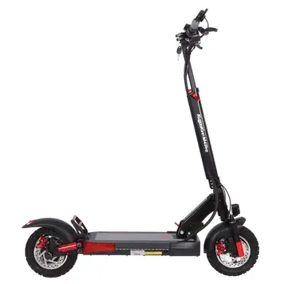

Про нас
Kugokirin — це спеціалізований український рітейлер, який займається продажем сільськогосподарської та садової техніки, а також обладнання та інструментів. Магазин пропонує широкий асортимент товарів, серед яких універсальні подрібнювачі, садові трактори, снігоприбирачі, кущорізи, дровоколи та різні вимірювальні інструменти. Компанія також спеціалізується на рішеннях у сфері сонячної енергії, таких як сонячні панелі, інвертори та системи накопичення енергії, а також електроінструменти та обладнання для фермерських потреб і будівництва. Асортимент включає як побутові, так і професійні товари, які можуть використовуватись у сільському господарстві, будівництві та ландшафтному дизайні. У їхньому каталозі є продукція, така як лазерні далекоміри, тепловізори, інші вимірювальні інструменти, що необхідні для будівельних робіт та обслуговування Kugokirin Kugokirin" . Додатково, компанія надає інноваційні системи сонячної енергії та технологічні рішення, які можуть використовуватись як у побутових, так і в професійних цілях. Більше інформації про товари та послуги можна знайти на їхньому офіційному сайті Kugokirin . та ще наша компанія створює електро самокати,які набирають швидкість до 80км/год.
Фірмовий магазин
Офіційний диллер
Маневруйте міськими вулицями з легкістю на сучасних електросамокатах Kugoo!
- З нами – надійно! Ми є офіційним дилером бренду KugooKirin та пропонуємо його продукцію на всій території України. Весь асортимент нашого магазину сертифікований та супроводжується необхідними документами.
- З нами – зручно! Наші спеціалісти працюють з нами з перших днів існування магазину. Вони допоможуть вам вибрати персональний транспортний засіб, враховуючи ваші побажання та цілі.
- З нами – вигідно! Прямі ціни від виробника без додаткових націнок та витрат. Персоналізовані бонуси та програми лояльності для оптових покупців.
- З нами – впевнено! Наш магазин прагне дарувати своїм клієнтам незабутні враження від поїздок на пристроях KugooKirin, допомагаючи знайти ідеальний транспортний засіб саме для вас та надаючи гарантію на строк до 24 місяців.